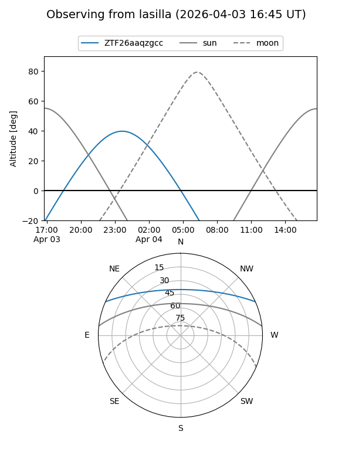
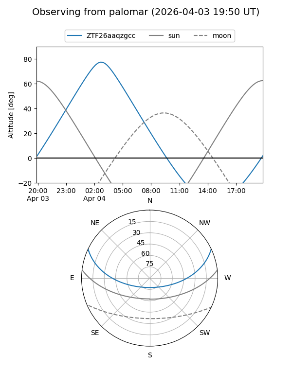

ZTF26aaqzgcc
Target ZTF26aaqzgcc at 2026-04-04 03:57
Aliases and brokers:
FINK: link
Lasair: link
ALeRCE: link
alt names
ZTF26aaqzgcc (ztf,fink_ztf)
Coordinates:
equatorial (ra, dec) = 115.7800,+21.00384
equatorial (HMS+DMS) = 07:43:07.20,+21:00:13.83
galactic (l, b) = (199.1130,+20.43942)
Flags:
Photometry:
last ztfg=19.45
1 ztfg detections
Lightcurve
Visibility


Additional plots